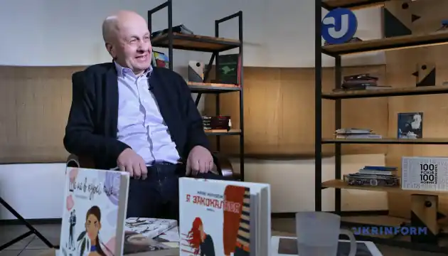

Василь Іванович Теремко народився 14 січня 1956 року с. Копачинці Городенківського району Івано-Франківської області.
1978 року закінчив філологічний факультет Чернівецького університету.
Працював завідувачем відділу районної газети в Теребовлі, редактором обласної молодіжної газети "Ровесник" у Тернополі, першим заступником головного редактора газети "Киевские ведомости", а також на організаційній роботі. Завідувач кафедри видавничої справи та редагування Інституту журналістики Київського університету, доцент. Викладає дисципліни: основи медіапродюсування, видавничий бізнес, редакторська майстерність, видавничі стандарти, економічна проблематика, копірайтинг. Перший віце-президент Української асоціації видавців і книгорозповсюджувачів. У 2013 році захистив докторську дисертацію.